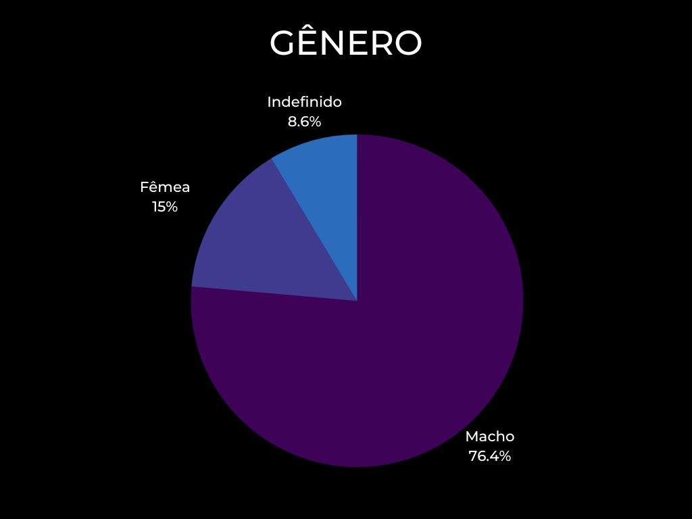
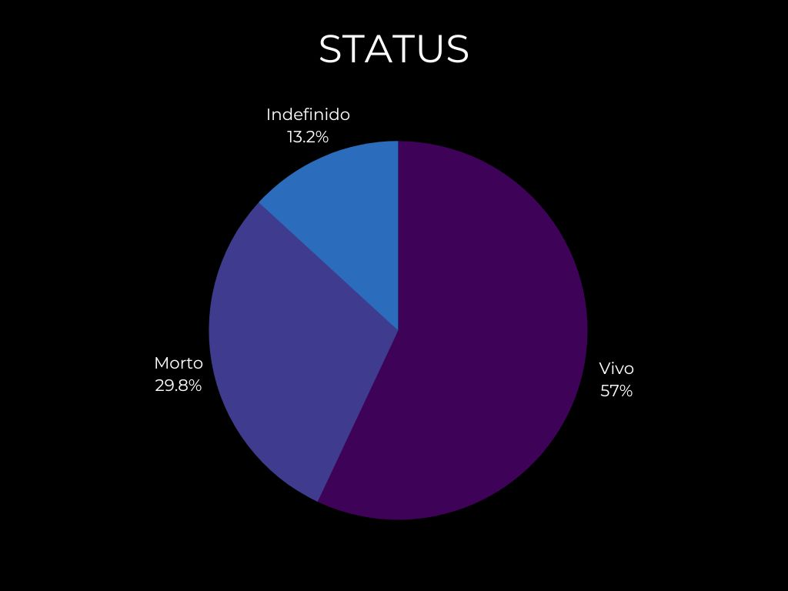
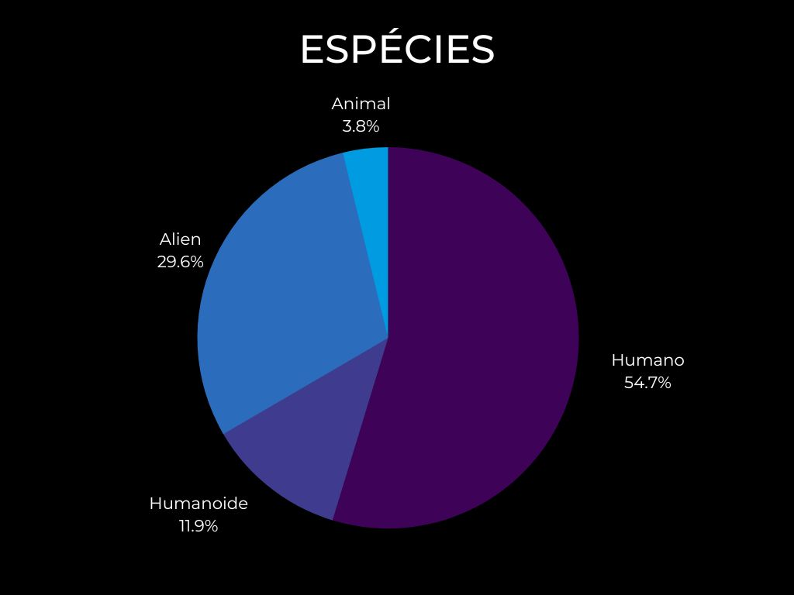

Foi desenvolvida uma aplicação web em modelo dashboard que interaja com os usuários, desde os leigos, até os fãs da renomada série animada Rick and Morty, utilizando referências aplicadas ao design de interação. A ideia foi construir uma página web inspirada num modelo de dashboard, ou seja, um painel personalizado para visualização de informações advindas de dados existentes. Através de uma interface lúdica e autodidata, nossos usuários conseguem navegar pelos cards da página e ao passar a seta por cima de algum, por meio de um efeito page flip, terá acesso à informações do respectivo personagem como: nome, status, espécie, gênero e localização. Além disso, nosso usuário tem a possibilidade de utilizar filtros para uma melhor seleção das informações que deseja acessar, inerente à ordem alfabética dos dados, de acordo com sua escolha, ou até mesmo para uma busca mais assertiva, utilizando o campo de busca. Abaixo é possível verificar em gráfico como os dados estão distribuídos na página web:
Dashboard Rick and Morty


